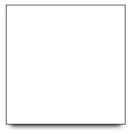

深入的 SVG 教程
HaoTian · 2024-11-30 15:31:44
SVG 是一种非常出色且功能强大的图像格式。本教程通过简单的方式为您提供 SVG 的概述，解释您需要知道的所有内容。
介绍
尽管在 21 世纪初就已经标准化，SVG（可缩放矢量图形的缩写）如今仍然是一个热门话题。
SVG 在过去的几年里受到了一些惩罚，主要是由于浏览器支持不佳（尤其是 IE 浏览器）。
我在一本 2011 年的书中找到这样一句话：“在撰写时，直接将 SVG 嵌入 HTML 中只在最新的浏览器中有效。”七年前，这已经成为过去式，现在我们可以安全地使用 SVG 图像。
如今，我们可以安全地使用 SVG 图像，除非您的用户中有很多使用 IE8 及以下版本，或者使用较旧的 Android 设备。在这种情况下，存在备用方案。
SVG 成功的一部分原因在于我们必须支持不同分辨率和尺寸的各种屏幕显示。这是 SVG 的完美任务。
此外，近年来 Flash 的快速衰退让人们重新关注 SVG，这对许多 Flash 曾经实现的功能来说是个好消息。
SVG 是一种矢量图像文件格式。这使得它与 PNG、GIF 或 JPG 等光栅图像文件格式有很大的不同。
SVG 的优点
由于 SVG 图像是矢量图像，因此可以无限缩放，而不会出现图像质量下降的问题。为什么呢？因为 SVG 图像是使用 XML 标记构建的，浏览器通过绘制每个点和线来渲染它们，而不是用预定义的像素填充某个空间。这确保了 SVG 图像可以适应不同的屏幕尺寸和分辨率，甚至是尚未发明的分辨率。
由于使用 XML 定义，SVG 图像比 JPG 或 PNG 图像更加灵活，我们可以使用 CSS 和 JavaScript 与它们进行交互。SVG 图像甚至可以包含 CSS 和 JavaScript。
SVG 图像可以以比其他格式更小的体积渲染矢量风格的图像，主要用于徽标和插图。另一个巨大的用例是图标。曾经属于图标字体（如 FontAwesome）的领域，现在设计师更倾向于使用 SVG 图像，因为它们更小，并且可以创建多颜色图标。
SVG 易于动画，这也是一个非常有趣的话题。
SVG 提供了一些图像编辑效果，如遮罩和剪裁、应用滤镜等。
SVG 本质上是文本，因此可以有效地使用 GZip 压缩。
您的第一幅 SVG 图像
SVG 图像是使用 XML 定义的。这意味着，如果您精通 HTML，SVG 看起来会非常熟悉，只不过在 SVG 中，我们使用的是适合构建矢量图像的基本元素，例如path、rect、line等，而不是用于文档构建的标签（如p、article、footer、aside）。
这是一个 SVG 图像示例：
<svg width="10" height="10">
<rect x="0" y="0" width="10" height="10" fill="blue" />
</svg>
注意到阅读和理解图像的外观是多么简单吗：这是一個简单的 10x10 像素（默认单位）的蓝色矩形。
大多数情况下，您无需编辑 SVG 代码，而是使用像 Sketch、Figma 或其他任何矢量图形工具来创建图像，并将其导出为 SVG 格式。
当前版本的 SVG 是 1.1，SVG 2.0 正在开发中。
使用 SVG
SVG 图像可以通过将其包含在img标签中来在浏览器中显示：
<img src="image.svg" alt="My SVG image" />
就像您在其他基于像素的图像格式中所做的那样：
<img src="image.png" alt="My PNG image" />
<img src="image.jpg" alt="My JPG image" />
<img src="image.gif" alt="My GIF image" />
<img src="image.webp" alt="My WebP image" />
此外，SVG 具有独特的特点，它们可以直接嵌入到 HTML 页面中：
<!DOCTYPE html>
<html>
<head>
<title>A page</title>
</head>
<body>
<svg width="10" height="10">
<rect x="0" y="0" width="10" height="10" fill="blue" />
</svg>
</body>
</html>
请注意，HTML5 和 XHTML 对内联 SVG 图像要求使用不同的语法。幸运的是，XHTML 已经成为过去，因为它比必要的复杂，但了解这些仍然是值得的，以防您需要在 XHTML 页面上工作。
将 SVG 嵌入 HTML 中的能力使得这种格式在当前环境中显得非常独特，因为其他图像格式无法做到这一点，必须为每个图像单独发起请求进行获取。
最常用的元素包括：
text：创建一个文本元素circle：创建一个圆形rect：创建一个矩形line：创建一条直线path：在两个点之间创建一条路径textPath：在两个点之间创建一条路径，并链接一个文本元素polygon：允许创建任意形状的多边形g：将多个独立元素分组
坐标从绘图区域的左上角(0,0)开始，
x轴从左到右延伸，y轴从上到下延伸。
您看到的图像反映了上面显示的代码。使用浏览器开发者工具，您可以检查和修改它们。
text
text元素用于添加文本。该文本可以通过鼠标进行选择。x和y定义了文本的起始点。
<svg>
<text x="5" y="30">A nice rectangle</text>
</svg>
circle
定义一个圆形。cx和cy是圆心坐标，r是半径。fill是一个常用属性，表示图形的颜色。
<svg>
<circle cx="50" cy="50" r="50" fill="#529fca" />
</svg>
rect
定义一个矩形。x和y是起始坐标，width和height是显而易见的。
<svg>
<rect x="0" y="0" width="100" height="100" fill="#529fca" />
</svg>
line
x1和y1定义了起始坐标。x2和y2定义了结束坐标。stroke是一个常用属性，表示线条的颜色。
<svg>
<line x1="0" y1="0" x2="100" y2="100" stroke="#529fca" />
</svg>
path
路径是一系列线段和曲线。它是使用 SVG 绘制的最强大工具，因此也是最复杂的。
d包含方向命令。这些命令以命令名称和一组坐标开头：
M表示移动，接受一组坐标x, yL表示线段，接受一组坐标x, y以绘制线条H表示水平线，仅接受一个x坐标V表示垂直线，仅接受一个y坐标Z表示闭合路径，将线段返回到起点A表示弧，这个需要一个单独的教程Q是一个二次贝塞尔曲线，同样需要一个单独的教程
<svg height="300" width="300">
<path
d="M 100 100 L 200 200 H 10 V 40 H 70"
fill="#59fa81"
stroke="#d85b49"
stroke-width="3"
/>
</svg>

textPath
沿着路径元素的形状添加文本。
<svg
viewBox="0 0 1000 600"
xmlns="http://www.w3.org/2000/svg"
xmlns:xlink="http://www.w3.org/1999/xlink"
>
<defs>
<path id="MyPath" d="M 20 40 Q 260 240 400 500" />
</defs>
<use xlink:href="#MyPath" fill="none" stroke="#59fa81" />
<text font-family="Courier New" font-size="42.5">
<textPath xlink:href="#MyPath">Wow such a nice SVG tut</textPath>
</text>
</svg>
polygon
使用polygon绘制任意随机多边形。points表示多边形应链接的一组x, y坐标：
<svg>
<polygon points="9.9, 1.1, 3.3, 21.78, 19.8, 8.58, 0, 8.58, 16.5, 21.78" />
</svg>
g
使用g元素可以将多个元素分组：
<svg width="200" height="200">
<rect x="0" y="0" width="100" height="100" fill="#529fca" />
<g id="my-group">
<rect x="0" y="100" width="100" height="100" fill="#59fa81" />
<rect x="100" y="0" width="100" height="100" fill="#ad4a3d" />
</g>
</svg>
SVG 视口和 viewBox
SVG 相对于其容器的大小由svg元素的width和height属性设置。这些单位默认是像素，但你可以使用其他常见单位，比如%或em。这就是视口。
通常，“容器”指的是浏览器窗口，但一个svg元素可以包含其他svg元素，在这种情况下，容器就是父svg。
一个重要的属性是viewBox。它允许你在 SVG 画布内部定义一个新的坐标系统。
假设你有一个简单的圆形，在一个 200x200 像素的 SVG 中：
<svg width="200" height="200">
<circle cx="100" cy="100" r="100" fill="#529fca" />
</svg>
通过指定viewBox，你可以选择只显示这个 SVG 的一部分。例如，你可以从坐标(0, 0)开始，只显示一个 100x100 像素的画布：
<svg width="200" height="200" viewBox="0 0 100 100">
<circle cx="100" cy="100" r="100" fill="#529fca" />
</svg>
从坐标(100, 100)开始，你将看到另一部分，即圆形的右下半部分：
<svg width="200" height="200" viewBox="100 100 100 100">
<circle cx="100" cy="100" r="100" fill="#529fca" />
</svg>
一个很好的视觉化方式是想象 Google 地图是一个巨大的 SVG 图像，而你的浏览器是一个与窗口大小相同的 viewBox。当你移动时，viewBox 的起始点(x, y)坐标会改变，而当你调整窗口大小时，就会改变 viewBox 的宽度和高度。
将 SVG 嵌入网页
有多种方式可以将 SVG 添加到网页中。
最常见的方法有：
- 使用
img标签 - 使用 CSS 的
background-image属性 - 直接嵌入 HTML 中
- 使用
object、iframe或embed标签
可以在 Glitch 上实时查看所有这些示例：https://glitch.com/edit/#!/flavio-svg-loading-ways
使用img标签
<img src="flag.svg" alt="Flag" />
使用 CSS 的background-image属性
<style>
.svg-background {
background-image: url(flag.svg);
height: 200px;
width: 300px;
}
</style>
<div class="svg-background"></div>
直接嵌入 HTML 中
<svg
width="300"
height="200"
viewBox="0 0 300 200"
version="1.1"
xmlns="http://www.w3.org/2000/svg"
xmlns:xlink="http://www.w3.org/1999/xlink"
>
<title>Italian Flag</title>
<desc>By Flavio Copes https://flaviocopes.com</desc>
<g id="flag">
<rect fill="green" x="0" y="0" width="100" height="200"></rect>
<rect fill="white" x="100" y="0" width="100" height="200"></rect>
<rect fill="red" x="200" y="0" width="100" height="200"></rect>
</g>
</svg>
使用object、iframe或embed标签
<object data="flag.svg" type="image/svg+xml"></object>
<iframe src="flag.svg" frameborder="0"></iframe>
<embed src="flag.svg" type="" />
使用embed时，你可以选择通过父文档获取 SVG 文档，方法是使用
document.getElementById("my-svg-embed").getSVGDocument();
在 SVG 内部，你可以通过以下方式引用父文档：
window.parent.document;
使用数据 URL 的内联 SVG
你可以将上述任意示例与数据 URL结合使用，在 HTML 中内联 SVG：
<img src="data:image/svg+xml;<DATA>" alt="Flag" />
<object data="data:image/svg+xml;<DATA>" type="image/svg+xml"></object>
<iframe data="data:image/svg+xml;<DATA>" frameborder="0"></iframe>
也可以在 CSS 中使用：
.svg-background {
background-image: url("data:image/svg+xml;<DATA>");
}
只需将 <DATA> 替换为合适的数据 URL。
样式化元素
任何 SVG 元素都可以像 HTML 标签一样接受 style 属性。不过，由于 SVG 的特性，并非所有 CSS 属性都能如预期那样工作。例如，要更改文本元素的颜色，应使用 fill 而不是 color。
<svg>
<text x="5" y="30" style="fill: green">A nice text</text>
</svg>
<svg>
<text x="5" y="70" style="fill: green; font-family: Courier New">
A nice text
</text>
</svg>
你也可以将 fill 用作元素属性，就像之前看到的那样：
<svg>
<text x="5" y="70" fill="green">A nice text</text>
</svg>
其他常见的属性包括：
fill-opacity：背景颜色的不透明度stroke：定义边框颜色stroke-width：设置边框宽度
CSS 可以像针对 HTML 标签一样，针对 SVG 元素进行样式设置：
rect {
fill: red;
}
circle {
fill: blue;
}
使用 CSS 或 JavaScript 与 SVG 交互
SVG 图像可以通过以下方式使用 CSS 样式化或 JavaScript 脚本化：
- 当 SVG 作为内联内容嵌入到 HTML 中时
- 当通过
object、embed或iframe标签加载图像时
但（⚠️ 具体情况取决于浏览器的实现），由于同源策略的限制，它们必须从相同的域（以及相同的协议）加载。
iframe 需要显式设置尺寸，否则内容会被裁剪，而 object 和 embed 会根据其内容自动调整大小。
如果 SVG 是通过 img 标签加载，或者作为背景通过 CSS 加载，不论其来源如何：
- CSS 和 JavaScript 无法与其交互
- SVG 中包含的 JavaScript 会被禁用
- 外部资源（如图像、样式表、脚本、字体）无法加载
详解：
| 特性 | 内联 SVG | object/embed/iframe |
img |
|---|---|---|---|
| 可以与用户互动 | ✅ | ✅ | ✅ |
| 支持动画 | ✅ | ✅ | ✅ |
| 可以运行自己的 JavaScript | ✅ | ✅ | 👎🏼 |
| 可以从外部进行脚本编写 | ✅ | 👎🏼 | 👎🏼 |
内联 SVG 图像无疑是最强大和灵活的方式，也是执行某些 SVG 操作的唯一方法。
如果你希望通过脚本与 SVG 进行任何交互，它必须以内联方式加载到 HTML 中。
如果不需要与 SVG 交互，只是希望在页面中显示它，那么通过 img、object 或 embed 加载 SVG 是可行的。这种方法在以下情况下特别方便：当你需要在不同页面中重复使用 SVG 图像，或者当 SVG 文件较大时。
SVG 中的 CSS
将 CSS 添加到 CDATA 中：
<svg>
<style>
<![CDATA[
#my-rect { fill: blue; }
]]>
</style>
<rect id="my-rect" x="0" y="0" width="10" height="10" />
</svg>
SVG 文件还可以包含外部样式表：
<?xml version="1.0" standalone="no"?>
<?xml-stylesheet type="text/css" href="style.css"?>
<svg
xmlns="http://www.w3.org/2000/svg"
version="1.1"
width=".."
height=".."
viewBox=".."
>
<rect id="my-rect" x="0" y="0" width="10" height="10" />
</svg>
SVG 中的 JavaScript
你可以将 JavaScript 放在前面，并包裹在一个 load 事件中，以便在页面完全加载且 SVG 插入 DOM 后执行：
<svg>
<script>
<![CDATA[ window.addEventListener("load", () => { //... }, false) ]]>
</script>
<rect x="0" y="0" width="10" height="10" fill="blue" />
</svg>
或者，如果你将 JavaScript 放在其他 SVG 代码的末尾，就可以避免添加事件监听器，从而确保 JavaScript 在 SVG 出现在页面时运行：
<svg>
<rect x="0" y="0" width="10" height="10" fill="blue" />
<script>
<![CDATA[ //... ]]>
</script>
</svg>
SVG 元素和 HTML 标签一样，可以拥有 id 和 class 属性，因此我们可以使用 Selectors API 来引用它们：
<svg>
<rect
x="0"
y="0"
width="10"
height="10"
fill="blue"
id="my-rect"
class="a-rect"
/>
<script>
<![CDATA[ console.log(document.getElementsByTagName('rect'))
console.log(document.getElementById('my-rect'))
console.log(document.querySelector('.a-rect'))
console.log(document.querySelectorAll('.a-rect')) ]]>
</script>
</svg>
查看这个 Glitch 示例 https://glitch.com/edit/#!/flaviocopes-svg-script，了解此功能的示例。
SVG 外部的 JavaScript
如果你可以与 SVG 交互（即 SVG 作为内联内容嵌入到 HTML 中），你可以使用 JavaScript 更改任何 SVG 属性，例如：
document.getElementById("my-svg-rect").setAttribute("fill", "black");
或者你可以执行任何其他的 DOM 操作。
SVG 外部的 CSS
你可以使用 CSS 更改 SVG 图像的任何样式。
SVG 属性可以很容易地在 CSS 中被覆盖，并且它们的优先级低于 CSS。它们不像内联 CSS 那样具有更高的优先级。
<style>
#my-rect {
fill: red;
}
</style>
<svg>
<rect x="0" y="0" width="10" height="10" fill="blue" id="my-rect" />
</svg>
SVG 与 Canvas API
Canvas API 是 Web 平台的一个重要补充，它与 SVG 具有相似的浏览器支持。SVG 与 Canvas 的主要（且显著的）区别在于，Canvas 不是基于矢量的，而是基于像素的，因此：
- 它与基于像素的 PNG、JPG 和 GIF 图像格式一样存在缩放问题
- 它使得无法像 SVG 那样使用 CSS 或 JavaScript 编辑 Canvas 图像
SVG 符号
符号让你可以定义一个 SVG 图像一次，并在多个地方重用它。如果你需要重用某个图像，并可能只改变它的一些属性，这将非常有帮助。
你可以通过添加一个 symbol 元素并为其指定 id 属性来实现：
<svg class="hidden">
<symbol id="rectangle" viewBox="0 0 20 20">
<rect x="0" y="0" width="300" height="300" fill="rgb(255,159,0)" />
</symbol>
</svg>
<svg>
<use xlink:href="#rectangle" href="#rectangle" />
</svg>
<svg>
<use xlink:href="#rectangle" href="#rectangle" />
</svg>
（xlink:href 是为了支持 Safari，即使它是一个已弃用的属性）
这开始展示了 SVG 的强大功能。
例如，如果你想以不同的颜色样式化这两个矩形，每个矩形使用不同的颜色？你可以使用 CSS 变量。
<svg class="hidden">
<symbol id="rectangle" viewBox="0 0 20 20">
<rect x="0" y="0" width="300" height="300" fill="var(--color)" />
</symbol>
</svg>
<svg class="blue">
<use xlink:href="#rectangle" href="#rectangle" />
</svg>
<svg class="red">
<use xlink:href="#rectangle" href="#rectangle" />
</svg>
<style>
svg.red {
--color: red;
}
svg.blue {
--color: blue;
}
</style>
查看我在 Glitch 上的 SVG 符号 Playground。
验证 SVG
由于 SVG 文件是 XML 格式，它可能被写成无效的格式，有些服务或应用程序可能不接受无效的 SVG 文件。
可以使用 W3C 验证器 来验证 SVG。
我是否应该包含 xmlns 属性？
有时，SVG 是这样定义的：
<svg>...</svg>
有时是这样定义的：
<svg version="1.1" xmlns="http://www.w3.org/2000/svg">...</svg>
第二种形式是 XHTML。它也可以与 HTML5（带有 <!DOCTYPE html> 的文档）一起使用，但在这种情况下，第一种形式更简单。
我需要担心浏览器支持吗？
如今，大多数用户的浏览器都支持 SVG。
你仍然可以使用像 Modernizr 这样的库检查是否缺少支持，并提供备选方案：
if (!Modernizr.svg) {
document.querySelector(".my-svg").setAttribute("src", "images/logo.png");
}